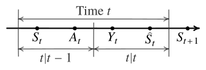

26 When to observe a Markov chain
Consider a time-homogeneous finite-state Markov chain \((S_t)_{t \ge 1}\), \(S_t \in \ALPHABET S\), with transition matrix \(P\). A remotely located estimator wants to track the Markov process but observations are costly. In particular, at each \(t\), the estimator takes two decisions:
First, it decides whether or not to observe the current state. If it decides to take an observation (denoted by \(A_t = 1\)), it incurs a cost \(λ\) and observes the current state, i.e., its observation \(Y_t = S_t\); if it decides not to take an observation (denoted by \(A_t = 0\)), it incurs no cost but its observation is blank, which is denoted by \(Y_t = \BLANK\).
Then, it generates an estimate \(\hat S_t \in \ALPHABET S\) of the current state and incurs an estimation error \(d(S_t, \hat S_t)\), where \(d \colon \ALPHABET S × \ALPHABET S \to \reals\) is a distortion function.
Thus, the per-step cost is given by \[ c(s, a, \hat s) = λ a + d(s, \hat s). \]
A timing diagram showing the sequence of system variables is shown in Figure 26.1.

At time \(t\), the underlying state is \(S_t\). The estimator first chooses the observation action \(A_t\) (stage \(t|t-1\)), then chooses the estimate \(\hat S_t\) (stage \(t|t\)); the observation \(Y_t\) is generated according to the rule above. Neither decision affects the transition of the chain: after stage \(t|t\), the state evolves to \(S_{t+1}\) according to \(P\), independently of \((A_t,\hat S_t)\).
The history of data available when making these decisions is denoted by \(H_{t|t-1}\) and \(H_{t|t}\). Thus, \[\begin{align*} H_{t|t-1} &= \{ Y_{1:t-1}, A_{1:t-1}, \hat S_{1:t-1} \} \\ H_{t|t} &= \{ Y_{1:t}, A_{1:t}, \hat S_{1:t-1} \} \end{align*}\]
Let \(π_{t|t-1}\) and \(π_{t|t}\) denote the observation and estimation policies used to determine \(A_t\) and \(\hat S_t\), i.e., \[\begin{align*} A_t &= π_{t|t-1}(H_{t|t-1}) \\ \hat S_t &= π_{t|t}(H_{t|t}) \end{align*}\]
The goal is to minimize the expected total cost \[ \EXP\Bigl[ \sum_{t=1}^T c(S_t, A_t, \hat S_t) \Bigr] \] over observation and estimation policies.
26.1 History based dynamic programming
We start by presenting a history based dynamic program for the problem. Initialize \[ V_{T+1|T}(h_{T+1|T}) = 0 \] and for \(t \in \{T, \dots, 1\}\), recursively compute \[\begin{align*} V_{t|t}(h_{t|t}) &= \min_{\hat s_t \in \ALPHABET S} \Bigl\{ d(S_t, \hat s_t) + V_{t+1|t}(h_{t|t} ⋅ \hat s_t) \Bigr\} \\ &= \min_{\hat s_t \in \ALPHABET S} \Bigl\{ d(S_t, \hat s_t) \Bigr\} + V_{t+1|t}(h_{t|t} ⋅ \hat s_t) \\ V_{t|t-1}(h_{t|t-1}) &= \min\Bigl\{ V_{t|t}(h_{t|t-1} ⋅ (0, \BLANK)), λ + \EXP\bigl[ V_{t|t}(h_{t|t-1} ⋅ (1, S_t)) \mid h_{t|t-1}, a_t = 1 \bigr] \Bigr\} \end{align*}\]
The history-based value functions are defined on domains that grow with \(t\), so the recursion is not practical to compute as written. We now present a dynamic program which uses beliefs as information state.
26.2 Belief based dynamic programming
We now present a belief based dynamic programming decomposition. To this end, define \[\begin{align*} b_{t|t-1}(s) &= \PR(S_t = s \mid h_{t|t-1}) \\ b_{t|t}(s) &= \PR(S_t = s \mid h_{t|t}) \end{align*}\]
The evolution of the beliefs are given as follow \[ b_{t|t}(s) = \begin{cases} b_{t|t-1}(s), & a_t = 0 \\ δ_{y_t}(s), & a_t = 1 \end{cases} \] and \[ b_{t+1|t}(s) = \sum_{s_t \in \ALPHABET S} b_{t|t}(s_t) P(s|s_t). \] Thus, \[ b_{t+1|t} = b_{t|t} P. \]
Hence, we can write the belief based dynamic program as follows. Initialize \[ V_{T+1|T}(b_{T+1|T}) = 0 \] and for \(t \in \{T, \dots, 1\}\), recursively compute \[\begin{align*} V_{t|t}(b_{t|t}) &= \underbrace{ \min_{\hat s \in \ALPHABET S} \sum_{s_t \in \ALPHABET S} b_{t|t}(s_t) d(s_t, \hat s) }_{\eqqcolon D(b_{t|t})} + V_{t+1|t}(b_{t|t} P) \\ V_{t|t-1}(b_{t|t-1}) &= \min \Bigl\{ V_{t|t}(b_{t|t-1}), λ + \sum_{s \in \ALPHABET S} b_{t|t-1}(s) V_{t|t}(δ_{s}) \Bigr\} \end{align*}\]
Note that the optimal estimation policy is an open loop policy obtained by solving the optimization problem corresponding to \(D(b_{t|t})\). We now characterize the structure of the optimal observation policy.
26.2.1 Structure of optimal observation policy
Similar to Theorem 24.4, we can show that the value function \(V_{t|t}\) and \(V_{t|t-1}\) are piecewise linear and concave. Thus, \[ Q_{t|t-1}(b_{t|t-1}, 0) = V_{t|t}(b_{t|t-1}) \] is a concave function of \(b_{t|t-1}\) while \[ Q_{t|t-1}(b_{t|t-1},1) = λ + \sum_{s \in \ALPHABET S} b_{t|t-1}(s) V_{t|t}(δ_{s}) \] is an affine function of \(b_{t|t-1}\). Thus, by an argument similar to one used in Theorem 25.1, we get that the set of beliefs under which it is optimal to observe, \(\{ b : π_{t|t-1}(b) = 1 \}\), is convex.
26.3 Countable information state based dynamic program
Suppose that when the system starts, the remote estimator knows the state of the Markov chain, i.e., \(b_{1|0} = δ_{s_1}\). Then, any belief \(b_{t|t-1}\) can be written as \(δ_{z_t} P^{τ_t}\) where \(τ_t\) is the time since the last observation and \(z_t\) is the state observed at the last observation. Hence, the reachable set of the belief states \(b_{t|t-1}\) and \(b_{t|t}\) is given by \[ \ALPHABET R = \{ δ_z P^τ : z \in \ALPHABET S, τ \in \naturalnumbers \}. \] which is isomorphic to \(\ALPHABET S \times \naturalnumbers\). Hence, \((z_t, τ_t)\) may be viewed as an information state for the problem.
The information state based dynamic program can be written as follow. Initialize \[ V_{T+1|T}(z_{T+1}, τ_{T+1}) = 0 \] and for \(t \in \{T, \dots, 1\}\), recursively compute \[\begin{align*} V_{t|t}(z, τ) &= D(δ_{z} P^τ) + V_{t+1|t}(z, τ+1) \\ V_{t|t-1}(z, τ) &= \min\Bigl\{ V_{t|t}(z, τ), λ + \sum_{s \in \ALPHABET S} [P^τ]_{zs} V_{t|t}(s,0) \Bigr\} \end{align*}\]
In contrast to the belief state based dynamic program, the above dynamic program has a countable state space. Thus, it can be solved efficiently using state truncation.
Notes
The model and results of this section are adapted from Shuman et al. (2010).